1Run the provider
2 lines of C#
Add AddArkIdp() and UseArkIdp(), then run. A browser wizard asks for the rest, and the same process becomes the IdP.
dotnet add package Ark.oAuth.Oidc
ARK is a self-hosted OAuth 2.1 / OpenID Connect provider for ASP.NET Core. Add two lines, open a browser and answer the setup wizard: the same process is now your IdP. Apps sign in with two settings in .NET, Python or Node, and one console governs every tenant.
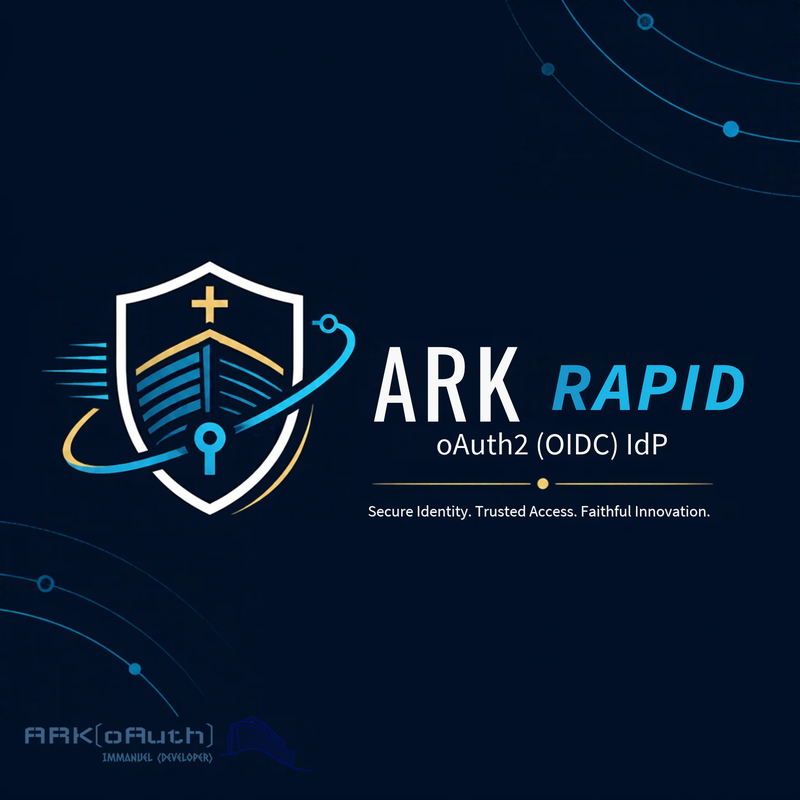
var builder = WebApplication.CreateBuilder(args); builder.AddArkIdp(); // that's the configuration var app = builder.Build(); app.UseArkIdp(); // wizard → IdP, no restart app.Run();
Most identity setups are a week of config. With Ark, each of these steps is complete as written: nothing is left to wire afterwards.
Add AddArkIdp() and UseArkIdp(), then run. A browser wizard asks for the rest, and the same process becomes the IdP.
dotnet add package Ark.oAuth.Oidc
One request registers the client and both redirect URIs, creates the user and maps them to the app. Forgetting that mapping is what usually breaks sign-in.
POST /api/oauth/v1/provision/clientauthority and client_id. Endpoints, keys and capabilities come from discovery, in .NET, Python or Node.
pip install "ark-oauth-client[flask]"
Started with no tenant and no database, the server sends every page to a setup wizard at
/ark-idp/setup. When you press Install it writes the settings,
creates and seeds the database and reloads its configuration. The same running process then
serves the sign-in page and the admin console, with no restart.
/ark-idp/setup answers 404.settings.json sits below user secrets and environment variables, so a key vault can still override any value.git clone https://github.com/ir-dev/ark-oauth-oidc
cd ark-oauth-oidc
dotnet run --project Ark.oAuth.Oidc/Ark.oAuth.Oidc.QuickStart
# open https://localhost:7300 → the wizard
Pipeline-built? A host that already has TenantId and a connection string never sees the wizard. The configured route, AddArkOidcServer, is released on NuGet today. See the S8 scenario.
Standing up an application means registering the client, registering its redirect URIs, creating the account and mapping that account to the client. The mapping is the step that gets forgotten, and without it sign-in fails exactly like a wrong password. Provisioning does all four steps, or none of them.
{
"client_name": "Nexus Grid Portal",
"user_name": "jane@example.com",
"redirect_uris": ["https://portal.example.com/signin-oidc"],
"post_logout_redirect_uris": ["https://portal.example.com/signout-callback-oidc"],
"client_logo": "data:image/png;base64,…"
}
409 client_exists and writes nothing, so a script can never rewrite a live app's redirect URIs.provision/user maps an existing account to another app without touching the account itself./{tenant}/admin/provisioning does the same, and shows you the curl for what you typed.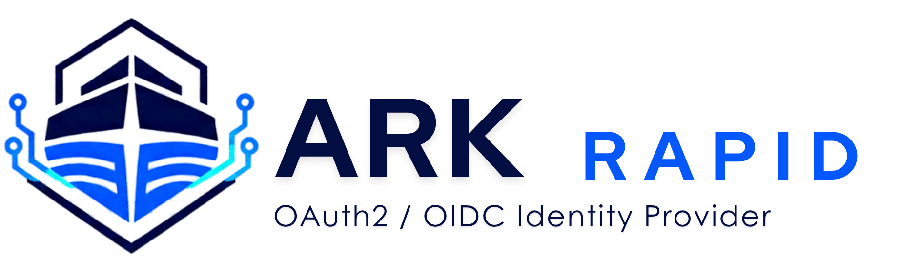
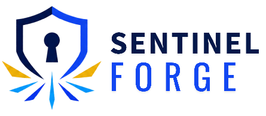
The sign-in page shows two logos: the host's, so users can see who is asking for their password, and the app's own client_logo, so they can see what they are signing in to. Theme and text size are the viewer's choice on every page.
Each tenant is its own issuer, with its own signing key, discovery document and branding. Administration is deliberately single-operator: the tenant you named in the wizard governs all of them, from one console and one API that a pipeline can drive too.
ark_idpAdmin console at /ark_idp/admin, with Provisioning and Data pages. Management API at /api/oauth/v1/…, open to the operator's console session or its machine client's token.
tenant/upsertprovision/clientactivation/useruser/client/claims/upsertdata/exportdata/import/apply/nexus_grid/sentinel_forge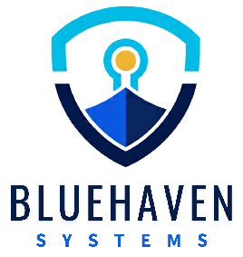
/bluehavenExample tenants. Every tenant's endpoints sit under {BaseUrl}/{tenant_id}/; any standard OIDC library pointed there configures itself.
App, redirect URIs, user and access in one call. A taken name is 409 and nothing is written.
Deactivating a user or an app revokes its sessions and refresh tokens at once, without deleting anything.
What a user may do is granted per user and per app. Apps check billing.admin, not scopes.
CI calls the API with a {tenant}_machine token whose secret comes from a vault. No other client is admitted.
Every table, keys included, as one file with a checksum, optionally sealed with AES-256-GCM.
replace, merge_skip or merge_overwrite, shown row by row before anything is written. Unsafe rows are excluded by named rules.
Empties every table and re-runs the first-run seed. It refuses if no administrator password is configured.
Pending scripts run once and are recorded. Missing tables and columns are added from the model, on every provider.
Every instance runs the same self-applying bootstrap, so a rolling upgrade has no migration step. Configuration comes from the environment or a key vault, so instances are identical. Use PostgreSQL or MySQL once there is more than one writer. To promote, clone or recover, take an encrypted export from one instance and an analysed import into the other. Every export, import and reset is written to the audit log.
TOKEN=$(curl -s -X POST https://idp.example.com/ark_idp/oauth2/token \
-d grant_type=client_credentials -d client_id=ark_idp_machine \
--data-urlencode client_secret="$ARK_MACHINE_SECRET" \
-d scope=client.register | jq -r .access_token)
# a leaver: sessions and refresh tokens go now
curl -s -X POST https://idp.example.com/api/oauth/v1/activation/user \
-H "Authorization: Bearer $TOKEN" -H 'Content-Type: application/json' \
-d '{ "user_name": "leaver@example.com", "is_active": false }'
An app is configured with the issuer and its client id, and nothing else. Endpoints, signing keys and capabilities come from the provider's discovery document at runtime, so rotating a key or moving an endpoint never means redeploying a client.
{BaseUrl}/{TenantId}my-app/oauth2/*jwks.json*_supportedstate & noncevalidated
Authorization is expressed as Ark claims granted per user and per client, not as
OAuth scopes. A route asks for billing.admin; the provider decides who holds it.
The three clients are ports of each other and share one version number, so an integration in one translates almost line for line into the others.
Register the OIDC handlers from one configuration section, then keep the middleware in order.
[Authorize(Roles = …)] just works.GetArkAccessTokenAsync(). Never cache it.AccountSwitch:RequireArkClaims plus RequiredClaims. Configuration only.Microsoft.IdentityModel.* on one version. A mixed set only fails at runtime.dotnet add package Ark.oAuth.Client
using Ark.oAuth; builder.Services.AddArkOidcClient(builder.Configuration); // binds "ark_oauth_client" var app = builder.Build(); app.UseRouting(); // MUST precede the next two app.UseAuthentication(); app.UseAuthorization();
"ark_oauth_client": { "Authority": "https://idp.example.com/my_idp", "ClientId": "my-app", "Scopes": ["openid", "profile", "email", "offline_access"] }
One call mounts /login, /signin-oidc and /logout. Claims are checked with a decorator.
ArkClientCredentials covers machine-to-machine calls.pip install "ark-oauth-client[flask]"
import os from flask import Flask from ark_oauth_client.flask import add_ark_oidc_client, current_ark app = Flask(__name__) app.secret_key = os.environ["ARK_SESSION_SECRET"] auth = add_ark_oidc_client(app, { "authority": "https://idp.example.com/my_idp", "client_id": "my-app", }) @app.get("/billing") @auth.require_claims("billing.admin") # Ark claims, not scopes def billing(): return current_ark.user["name"]
A single Express/Connect middleware serves login, the callback and logout, and guards routes by claim.
clientSecret for a public client. PKCE is used either way.accountSwitch: { requireArkClaims: true }, just like the other two.npm install ark-oauth-client
import express from 'express'; import { arkExpress } from 'ark-oauth-client'; const app = express(); const auth = arkExpress({ authority: 'https://idp.example.com/my_idp', clientId: 'my-app', redirectUri: 'https://app.example.com/signin-oidc', secret: process.env.ARK_SESSION_SECRET // >= 16 chars }); app.use(auth); // /login, callback, /logout app.get('/billing', auth.requireClaims('billing.admin'), (req, res) => res.send(req.ark.user.name));
Every release ships all four together from one workflow, using Trusted Publishing on every registry. No tokens are involved.
The identity provider: setup wizard, sign-in, consent, admin console, provisioning and data tools.
The ASP.NET Core client: OIDC handlers, token refresh, the account switch and claim projection.
A Python client for Flask, with a core that doesn't depend on any framework.
A Node client: Express/Connect middleware, bearer protection and sessions that interoperate with the Python client.
Point Claude Code, Copilot, Cursor or Codex at this repository and it finds rules, prompts and checks it can follow, so it has nothing to guess and no config to invent.
A digest of the whole project at a fixed URL: packages, entry points, required settings, governance API and the rules that matter.
Fifteen tasks, from adding sign-in to restoring a backup. Each one has a paste-ready prompt, exact code, a Done when check and a Do not list.
The .NET and Python packages ship rules, recipes, the API surface, troubleshooting and migration notes beside their READMEs and inside the package.
The whole contract in about forty lines, for an agent that works with Ark every day.
Add Ark sign-in to this ASP.NET Core app using the Ark.oAuth.Client NuGet package. Do not hand-roll OAuth. Authority is https://idp.example.com/my_idp and ClientId is my-app. Put both in the "ark_oauth_client" config section; the client secret, if any, goes in user-secrets, not appsettings. Call AddArkOidcClient(builder.Configuration), and make sure UseRouting() precedes UseAuthentication() and UseAuthorization(). Protect the dashboard with [Authorize], and admin pages with [Authorize(Roles = "billing.admin")]. Add a sign-out that signs out of BOTH ArkOidcClient.CookieScheme and ArkOidcClient.OidcScheme. Do not add any route at /signin-oidc. Afterwards, list the exact redirect URIs I must register on the IdP and remind me to map my user to the client.
OAuth 2.1 removed the risky grants, and Ark never implemented them. The rest is enforced as well, not left as advice.
S256 enforced for public clients; plain is refused.Any standard OIDC library pointed at the issuer configures itself. You don't need the ARK clients to use the provider; they just remove the boilerplate.
PKCE is required for public clients, with S256 only.
ID tokens, UserInfo, nonce, at_hash, sid and discovery.
Access tokens are at+jwt, with a published key set and two-phase rotation.
For CLIs and TVs, including verification_uri_complete.
Optional, and can be made mandatory per server.
Revoking a token revokes its whole refresh-token family.
A signed logout_token goes to every client the user signed into.
Available, but off by default.
Returns iss in the authorization response and accepts loopback redirects on any port.
Deliberately not supported: the implicit grant, the hybrid flow and the password grant
(all removed in OAuth 2.1), plain PKCE, and front-channel logout.
Most failed sign-ins come down to one of these, in every language. Provisioning avoids the first two.
ARK maps users to clients explicitly. Without a mapping, sign-in fails with an error that is indistinguishable from a wrong password.
Redirect URIs are matched byte for byte. Register both /signin-oidc and /signout-callback-oidc.
A scope that isn't registered on the client is rejected, not dropped. offline_access is what produces a refresh token.
SSO signs the next person in as the previous one. All three clients ship the fix: turn on RequireArkClaims with RequiredClaims, and the app offers prompt=login instead of a dead end.
Enter your authority and client id to get the authorization URL and the matching token exchange. The PKCE
verifier, state and nonce are generated with Web Crypto in this tab.
Generate a request to see it here.
…
…
Ark started as a small ASP.NET Core OAuth 2 implementation and grew into a standards-complete, multi-tenant identity provider. These are its marks, then and now.
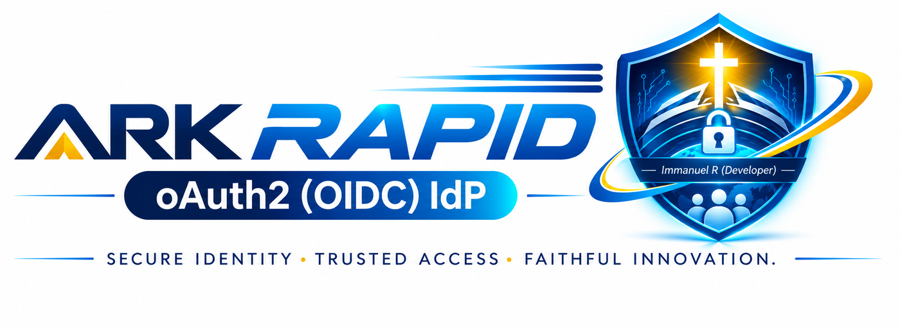
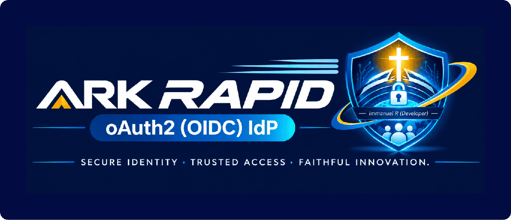
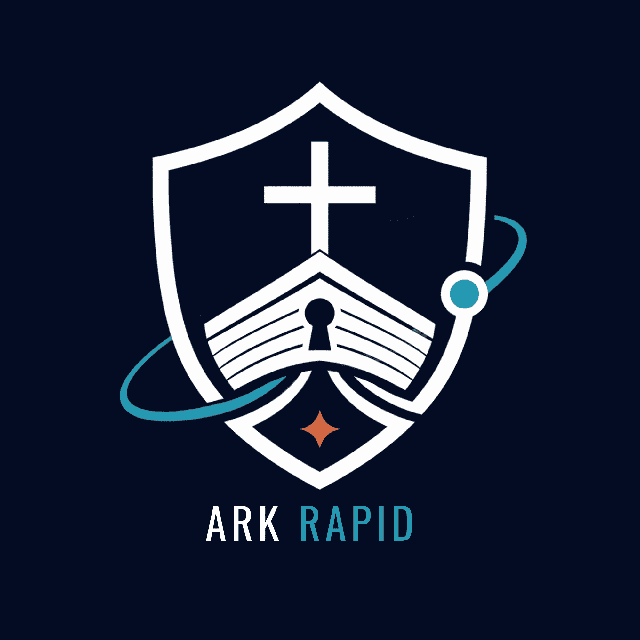
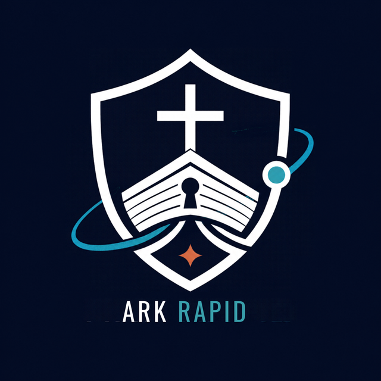
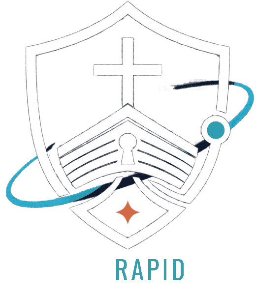
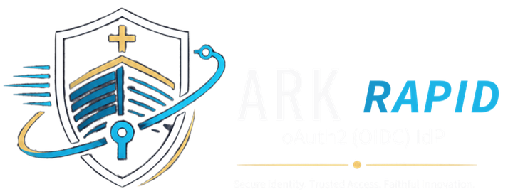
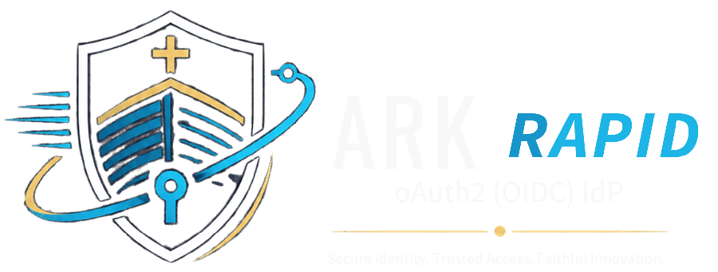
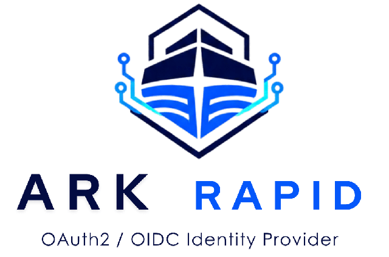

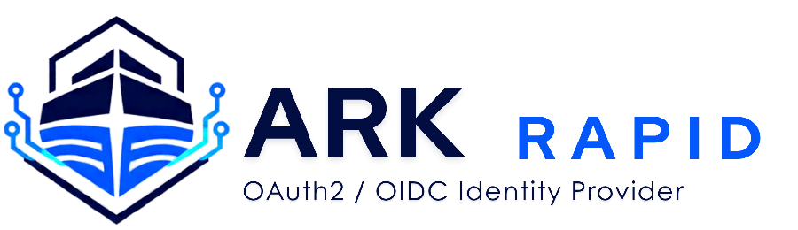
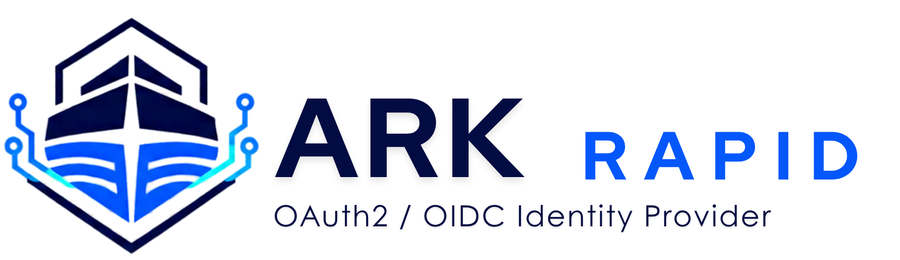
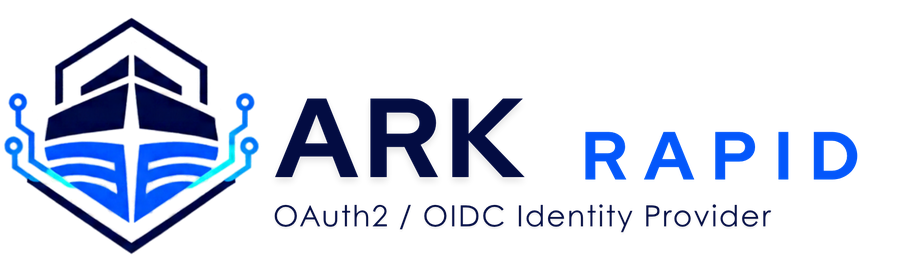
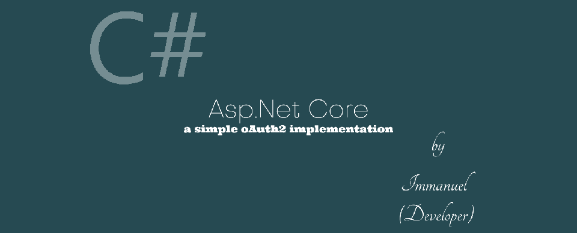
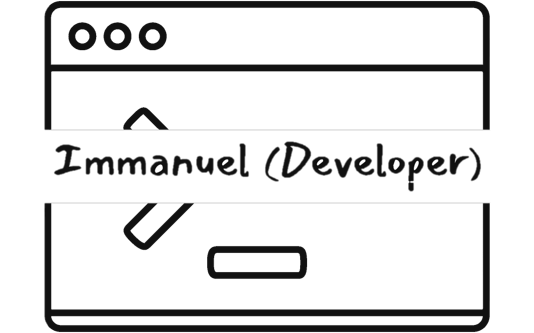
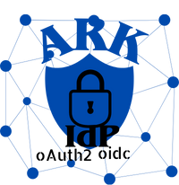
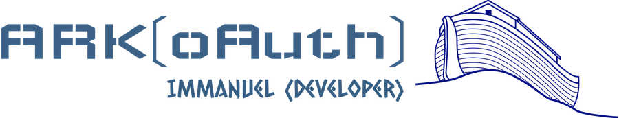
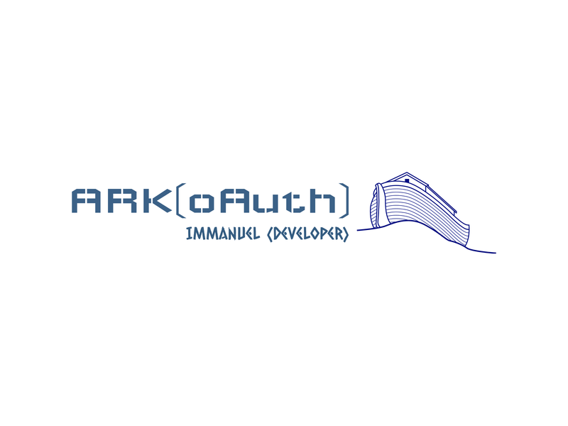
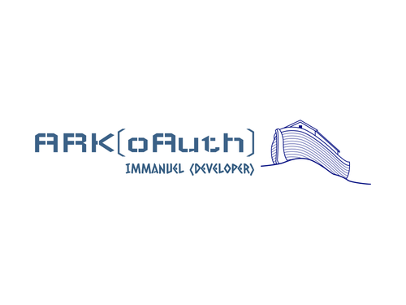
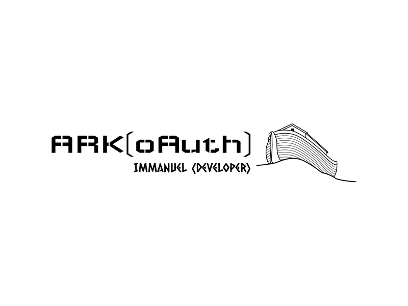
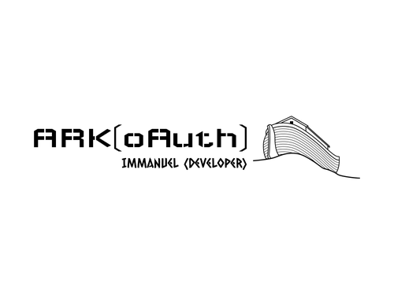
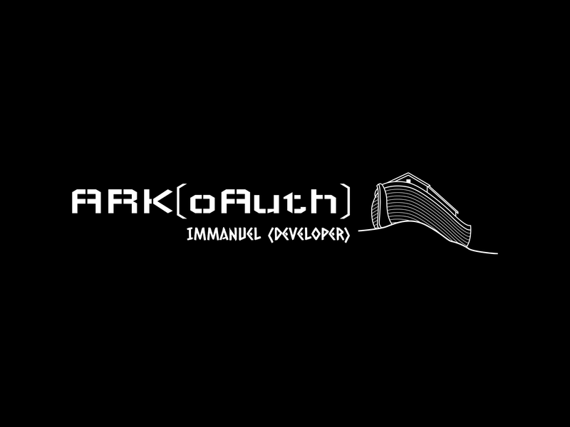
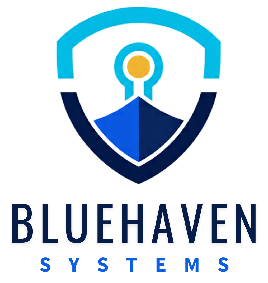